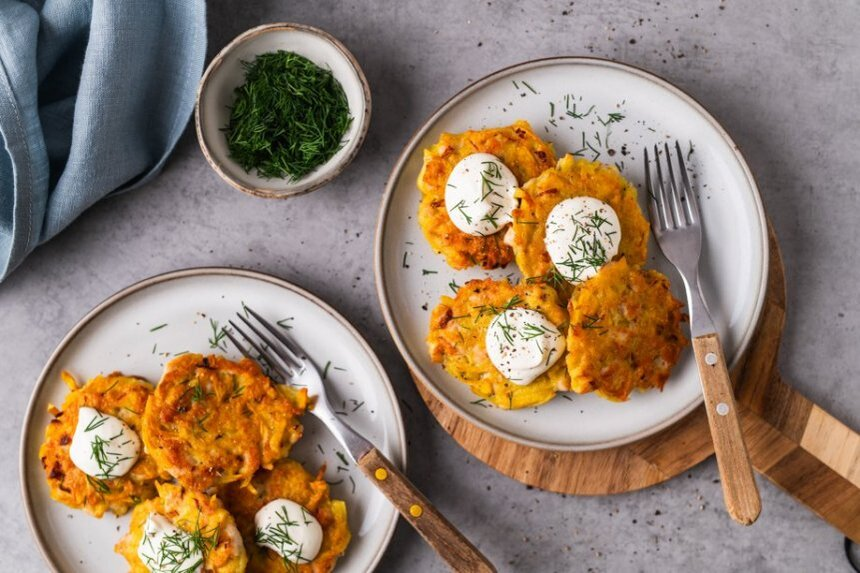

Bulviniai blynai su vištiena
Ingredientai:
- 500 gramų bulvių
- 250 gramų vištienos krūtinėlės
- 150 gramų sūrio (fermentinio)
- 1 vienetas kiaušinių
- 1 vienetas svogūnų
- 2 šaukštai kvietinių miltų (apytikriai)
- 1 šaukštelis druskos
Paruošimas
Paruošimo laikas: Apie 1 val.
- Bulves sutarkuokite burokine tarka.
- Sumaišykite su druska, leiskite pastovėti 10-15 minučių ir nuspauskite susidariusį skystį.
- Bulvių tarkius sumaišykite su labai smulkiai supjaustyta vištienos krūtinėle, smulkiai pjaustytu svogūnu, kiaušiniu. Įmaišykite miltus.
- Keptuvėje virš vidutinio dydžio ugnies įkaitinkite aliejų. Dėkite po šaukštą paruoštos masės (kad blyneliai būtų taisyklingesni, galite juos formuoti šiek tiek sudrėkintais delnais). Kepkite kelias minutes, kol apskrus, tuomet apverskite ir kepkite dar kelias minutes. Bulvės turi suminkštėti, o vištiena – pilnai iškepti.
- Nusausinkite blynus ant popierinių rankšluosčių, kad sugertų riebalų perteklių.
- Patiekite blynelius su grietine ar kitais mėgstamais priedais.